UDN
Search public documentation:
GettingStartedWithGeometryModeJP
English Translation
中国翻译
한국어
Interested in the Unreal Engine?
Visit the Unreal Technology site.
Looking for jobs and company info?
Check out the Epic games site.
Questions about support via UDN?
Contact the UDN Staff
中国翻译
한국어
Interested in the Unreal Engine?
Visit the Unreal Technology site.
Looking for jobs and company info?
Check out the Epic games site.
Questions about support via UDN?
Contact the UDN Staff
ジオメトリ モード入門
概要
開始
 これを行うと、選択されたブラシの外見が変わり、新しいモードに切り替わったことを示します。以下のような状態です。
これを行うと、選択されたブラシの外見が変わり、新しいモードに切り替わったことを示します。以下のような状態です。
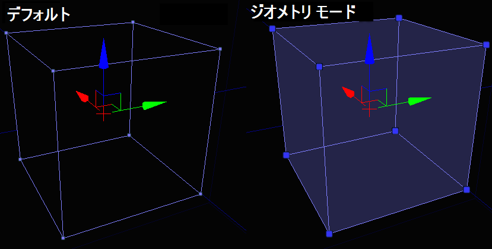
選択
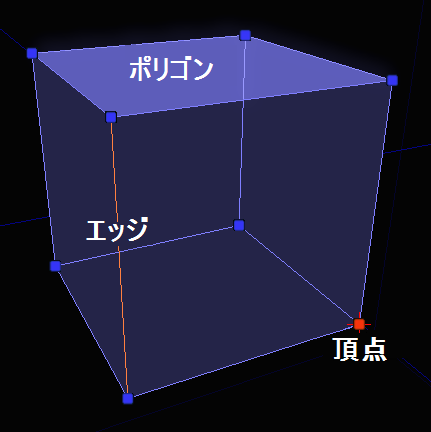
これらの要素はすべて、UnrealEd 内の他のオブジェクトと同じように―一度に 1 つ、複数、またはコンビネーションで―選択することができます。編集
Modifiers (モディファイヤ)
 モディファイヤには、アクティブとパッシブの 2 種類あります。
パッシブ モディファイヤに、何かをさせるにはユーザーのインタラクションが必要になります。
アクティブ モディファイヤは、マウスのドラッグやそれに似た行為なしで、選択されたものに即座に働きかけます。
パッシブ モディファイヤは、通常モディファイヤが何をするかに影響を与えるような設定できるパラメータを持っているので、プロパティ ウィンドウの上のダイアログ上部に表示されます。アクティブ モディファイヤは、入力やパラメータを必要としない押すボタンなので、ダイアログの下の部分に表示されます。
モディファイヤには、アクティブとパッシブの 2 種類あります。
パッシブ モディファイヤに、何かをさせるにはユーザーのインタラクションが必要になります。
アクティブ モディファイヤは、マウスのドラッグやそれに似た行為なしで、選択されたものに即座に働きかけます。
パッシブ モディファイヤは、通常モディファイヤが何をするかに影響を与えるような設定できるパラメータを持っているので、プロパティ ウィンドウの上のダイアログ上部に表示されます。アクティブ モディファイヤは、入力やパラメータを必要としない押すボタンなので、ダイアログの下の部分に表示されます。
パッシブ モディファイヤ
Edit (編集)
これは、ジオメトリ モードのデフォルトのモディファイヤであり、つまり現状を表しています。選択したものに特に何も変更が加わりません。このモードでは、UnrealEd 内での通常と同様、選択したものをドラッグ、回転、スケールすることが可能です。Extrude (押し出す)
選択されたオブジェクトを法線に沿って前方に移動させ、必要ならば後ろに新しいジオメトリを作成します。Properties (プロパティ)
 Length (長さ) - 各押し出しチャンクの長さです。
Segments (セグメント) - モディファイヤを適用するたびに、押し出したチャンクをいくつ作成するかです。
Length (長さ) - 各押し出しチャンクの長さです。
Segments (セグメント) - モディファイヤを適用するたびに、押し出したチャンクをいくつ作成するかです。
例
以下の写真では、このブラシの上部のポリゴンを 64 ユニット押し出しました。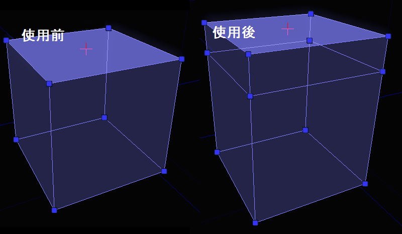
Brush Clip (ブラシ クリップ)
ブラシ クリップは、ブラシから断片をカットしたり、ブラシを複数のブラシに分けたりする素早い方法です。基本的なコンセプトは、2 つのアンカー ポイントをビューポートで定義し、クリップ操作を行う際に、これがクリップに使用される線になります。チーズの塊にワイヤを押して通していると考えてみてください。Properties (プロパティ)
 bFlipNormal – チェックされているとクリップは法線の反対側で起きます。
bSplit - チェックされていると、ブラシはジオメトリをクリップ ラインの後ろに投げるのではなく、2 つの断片に分割します。
bFlipNormal – チェックされているとクリップは法線の反対側で起きます。
bSplit - チェックされていると、ブラシはジオメトリをクリップ ラインの後ろに投げるのではなく、2 つの断片に分割します。
例
クリップ アンカーを配置するには、2D ビューポートがフォーカスを持つことを確認してください。カーソルに続いて、白いボックスが表示されます。このボックスは、どこにクリップ アンカーがドロップされるかを示しています。スペースバーを押すと、アンカーをドロップします。マウスを 2 つ目のアンカーをドロップしたいところに持って行き、スペースバーをもう一度押します。以下のような画面が表示されます。 クリップ アンカーを配置する際に間違えた場合は、[Esc] を押すことで最後にドロップしたアンカーを削除することができます。
“Apply (適用)” ボタンをクリックする (または [Enter] を押す) と、ラインの後ろのジオメトリをクリップします。ラインの前面は、中央でラインから外に向かってポイントしているラインによって示されます。ラインの方向は重要なので、どのように見えるのかに慣れるようにしてください。モディファイヤを適用すると、以下のような画面になります。
クリップ アンカーを配置する際に間違えた場合は、[Esc] を押すことで最後にドロップしたアンカーを削除することができます。
“Apply (適用)” ボタンをクリックする (または [Enter] を押す) と、ラインの後ろのジオメトリをクリップします。ラインの前面は、中央でラインから外に向かってポイントしているラインによって示されます。ラインの方向は重要なので、どのように見えるのかに慣れるようにしてください。モディファイヤを適用すると、以下のような画面になります。
 bFlipNormal がチェックされていると (または、[Shift] を押しながら [Enter] を押すと)、同じような操作になりますが、ラインが以下のように反対方向に向かっています。
bFlipNormal がチェックされていると (または、[Shift] を押しながら [Enter] を押すと)、同じような操作になりますが、ラインが以下のように反対方向に向かっています。
 最後に、bSplit が選択されていると、2 つのブラシになります。以下の写真では、実際の分割の結果が見えるように、ブラシを動かしましたが、この時点では説明している内容が既にお分かりでしょう。
最後に、bSplit が選択されていると、2 つのブラシになります。以下の写真では、実際の分割の結果が見えるように、ブラシを動かしましたが、この時点では説明している内容が既にお分かりでしょう。
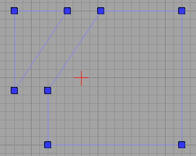
Pen (ペン)
ペン モディファイヤは、自由な形で 2D の形を描き、その形をブラシに変換することができます。これは、多くのジオメトリを包み込む必要があるブロッキング ボリュームなどのものを作成する際に、非常に便利です。Properties (プロパティ)
 bAutoExtrude - チェックされていると、描かれる形はフル ブラシに押し出されます。シート ブラシを作成しようとしている場合は、これはチェックしないでください。
bCreateBrushShape - チェックされていると、モディファイヤの結果は「ブラシ」ではなく、「ブラシ シェイプ」になります。ブラシ シェイプは、Lathe (旋盤) モディファイヤのテンプレートとして使用されます。
bCreateConvexPolygons - ブラシが作成されると、ポリゴンが凸面形のまま残るように、描かれた形は三角形に分解される必要があります (これは、Unreal Engine が内部で必要とすることです)。これがチェックされていると、三角形はなるべく少ない凸面形ポリゴンに最適化されます。
ExtrudeDepth - bAutoExtrude がチェックされていると、このフィールドは、ブラシが作成される深度を決定します。
bAutoExtrude - チェックされていると、描かれる形はフル ブラシに押し出されます。シート ブラシを作成しようとしている場合は、これはチェックしないでください。
bCreateBrushShape - チェックされていると、モディファイヤの結果は「ブラシ」ではなく、「ブラシ シェイプ」になります。ブラシ シェイプは、Lathe (旋盤) モディファイヤのテンプレートとして使用されます。
bCreateConvexPolygons - ブラシが作成されると、ポリゴンが凸面形のまま残るように、描かれた形は三角形に分解される必要があります (これは、Unreal Engine が内部で必要とすることです)。これがチェックされていると、三角形はなるべく少ない凸面形ポリゴンに最適化されます。
ExtrudeDepth - bAutoExtrude がチェックされていると、このフィールドは、ブラシが作成される深度を決定します。
例
モディファイヤは、ブラシ クリップ ツールのように動作します。2D ビューポートで、一連のアンカー ポイントをドロップし、それが終了したら [Enter] を押して、そこからブラシを作成します。多くのアンカー ポイントをドロップすると、以下のような画面になるでしょう。 形を描く最終段階に達すると、形を仕上げて最終的なブラシを作成するには、2 つの方法があります。1 つは、一番最初に配置したアンカー ポイントの上に最後のアンカーポイントを置いて、形を閉じることです。もう 1 つは、[Enter] を押すことです (最初と最後のアンカーは自動的に繋がります)。
[Enter] を押した後、以下のようになりました。
形を描く最終段階に達すると、形を仕上げて最終的なブラシを作成するには、2 つの方法があります。1 つは、一番最初に配置したアンカー ポイントの上に最後のアンカーポイントを置いて、形を閉じることです。もう 1 つは、[Enter] を押すことです (最初と最後のアンカーは自動的に繋がります)。
[Enter] を押した後、以下のようになりました。
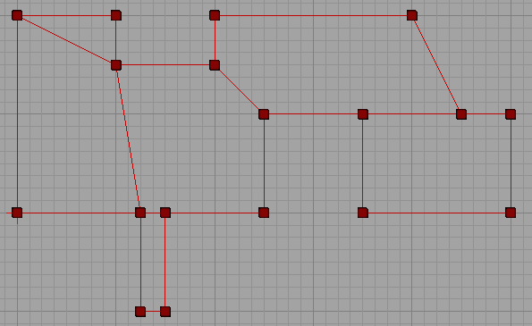
以下が 3D で見たブラシの結果です。どのようなことが起こったかもう少し良く分かっていただけるでしょう。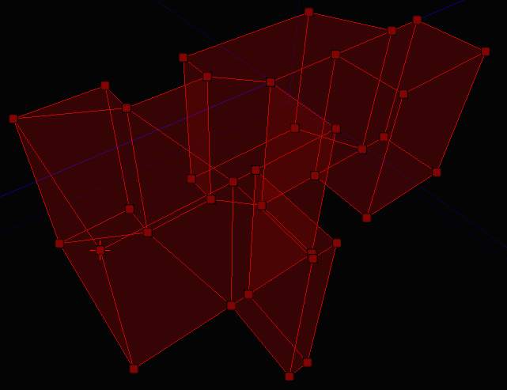
このモディファイヤで、非常に複雑なブラシやボリュームを、あまり骨を折らずに作成することができることが分かっていただけたと思います。Lathe (旋盤)
旋盤は、ピボット点を中心にブラシ シェイプ (ペン モディファイヤで作成されます) を回転させて、カーブしたブラシを作成します。これは、古い 2D シェイプ エディタ機能のようなものです。Properties (プロパティ)
 AlignToSide - チェックされていると、結果となるブラシは、半分余計に回転されます。これは、実際に試してみるとすぐに分かるでしょう。
Segments – 結果となるブラシにいくつのセグメントを持たせるかです。
TotalSegments - 回転全体が、いくつのセグメントを含むかです。
セグメントに関するフィールドは、少しややこしいですが、非常に便利です。4 つのセグメントの入った 90 度の回転が必要だとします。Segments を 4 に設定し、TotalSegments を 16 に設定します。どのように動作するか分かりますか？ 90 度は 360 の 4 分の 1 なので、4 つのセグメントは、その比率を維持するために、16 個のセグメントを必要とします。
AlignToSide - チェックされていると、結果となるブラシは、半分余計に回転されます。これは、実際に試してみるとすぐに分かるでしょう。
Segments – 結果となるブラシにいくつのセグメントを持たせるかです。
TotalSegments - 回転全体が、いくつのセグメントを含むかです。
セグメントに関するフィールドは、少しややこしいですが、非常に便利です。4 つのセグメントの入った 90 度の回転が必要だとします。Segments を 4 に設定し、TotalSegments を 16 に設定します。どのように動作するか分かりますか？ 90 度は 360 の 4 分の 1 なので、4 つのセグメントは、その比率を維持するために、16 個のセグメントを必要とします。
例
このモディファイヤの説明は、少しペン モディファイヤの説明に戻ることが必要です。旋盤モディファイヤを使用するには、ブラシ シェイプを作成する必要があります。これは、ペン モディファイヤで bCreateBrushShape をチェックした状態でブラシを作成します。すると、ラインが明るい緑色に変わり、これにより正しいステップを踏んでいることが分かります。 終了したら、以下のようなブラシ シェイプが表示されます。 レベルには、いくつでもブラシ シェイプを作成することができます。ブラシ シェイプは、BSP ジオメトリに影響を与えませんし、旋盤モディファイヤのみに使用されます。
形を選択して、旋盤にしたい場合、いくつかすることがあります。
1. ブラシ シェイプを選択します。
2. ピボット点をシェイプのどこか近くに設置します。
ピボット点は回転の中心となるので、これは重要です。円の中心という風に考えてみてください。ピボット点を手動で動かす方法はいくつかありますが、もっとも早い方法は、起きたい部分をポイントして、[Alt] キーを押しながら、マウスの真ん中ボタンをクリックすることです。
3. シェイプの上から下へのビューを持つビューポートがアクティブであることを確認してください。
これは、当然のことのように思えないかも知れませんが、すぐに明白になります。シェイプを旋回する準備ができると、以下のような画面になります。
レベルには、いくつでもブラシ シェイプを作成することができます。ブラシ シェイプは、BSP ジオメトリに影響を与えませんし、旋盤モディファイヤのみに使用されます。
形を選択して、旋盤にしたい場合、いくつかすることがあります。
1. ブラシ シェイプを選択します。
2. ピボット点をシェイプのどこか近くに設置します。
ピボット点は回転の中心となるので、これは重要です。円の中心という風に考えてみてください。ピボット点を手動で動かす方法はいくつかありますが、もっとも早い方法は、起きたい部分をポイントして、[Alt] キーを押しながら、マウスの真ん中ボタンをクリックすることです。
3. シェイプの上から下へのビューを持つビューポートがアクティブであることを確認してください。
これは、当然のことのように思えないかも知れませんが、すぐに明白になります。シェイプを旋回する準備ができると、以下のような画面になります。
 シェイプを上から見下ろした状態で、ピボットがちょうど良い場所にあるので、"Apply (適用)” ボタンをクリックします。すると、以下のようになりました。
シェイプを上から見下ろした状態で、ピボットがちょうど良い場所にあるので、"Apply (適用)” ボタンをクリックします。すると、以下のようになりました。
 より分かりやすいビューは以下の通りです。
より分かりやすいビューは以下の通りです。
 これで、ブラシ シェイプとピボットがどのように働き、結果となるブラシを作成したかが明白に分かります。ブラシ シェイプはレベルのどこかで使用することもできますし、削除しても構いません。
これで、ブラシ シェイプとピボットがどのように働き、結果となるブラシを作成したかが明白に分かります。ブラシ シェイプはレベルのどこかで使用することもできますし、削除しても構いません。
Delete (削除)
ソース ブラシから選択されたものを削除します。(エッジや頂点など) 複数のアイテムが依存している何かを削除すると、ジオメトリはこれを反映してつぶされることに留意してください。Create (作成)
これは、オブジェクトに穴を作成して、やはりその穴を塞ぎたい場合などに便利です。選択した頂点のセットから新しいポリゴンを作成します。例
以下のように、ポリゴンが欠けているブラシがあるとします。 この穴を塞ぐのに新しいポリゴンを作成するには、新しいポリゴンを形作りたい頂点を、時計回りに選択し、”Create (作成)” ボタンをクリックします。ボタンをクリックする前に、以下のような画面になります (頂点選択の順序に注目してください)。
この穴を塞ぐのに新しいポリゴンを作成するには、新しいポリゴンを形作りたい頂点を、時計回りに選択し、”Create (作成)” ボタンをクリックします。ボタンをクリックする前に、以下のような画面になります (頂点選択の順序に注目してください)。
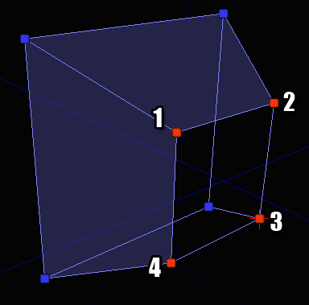
どの頂点から開始するかは関係ありませんが、時計回りに選択していくことが重要です。反時計回りに選択すると、特に悪いことは起きませんが、ポリゴンが反対向きに作成されます。なので、Flip (反転) モディファイヤを使用して修正しなければいけなくなります。 “Create (作成)” ボタンをクリックしたら、新しいポリゴンの作成されたブラシができます。
Flip (反転)
選択したポリゴンを反転し、反対方向に向かせます。何らかの理由で失敗してしまったり、新しいポリゴンを作成したものの頂点を間違った順序で選択してしまったりという場合に、これを修正するために便利です。Split (分割)
他の 3D パッケージでは "ring cut" や "scalpel" などと呼ばれるのに似た操作を実行することができます。ブラシ クリップ モディファイヤの特別バージョンとでも考えてみてください。例
ブラシに何を選択したかによって、数々の異なる方法に分割することができます。各事例は以下に示してあります。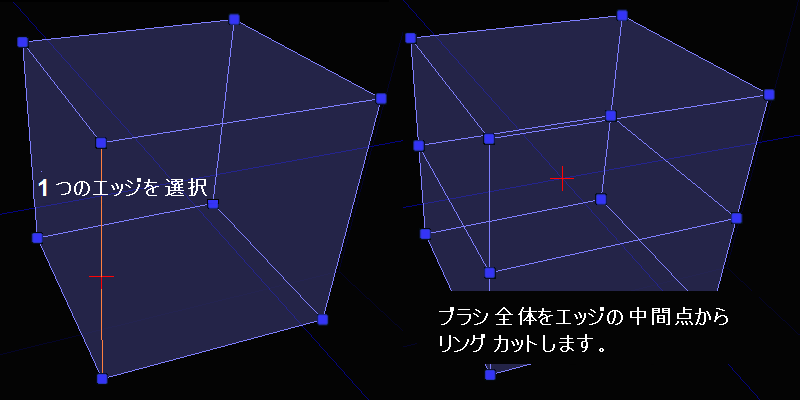
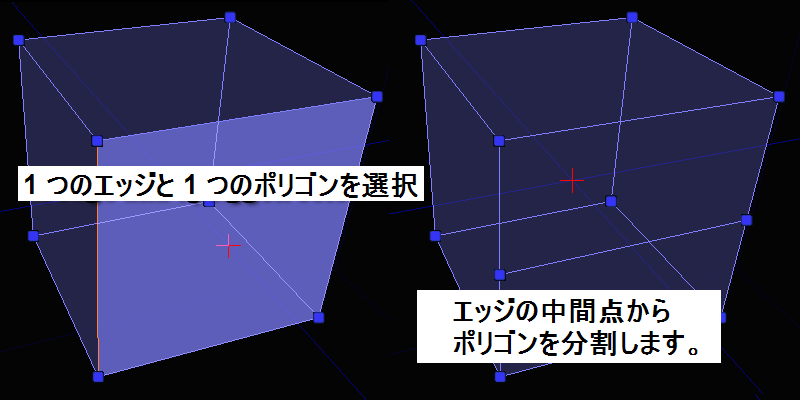
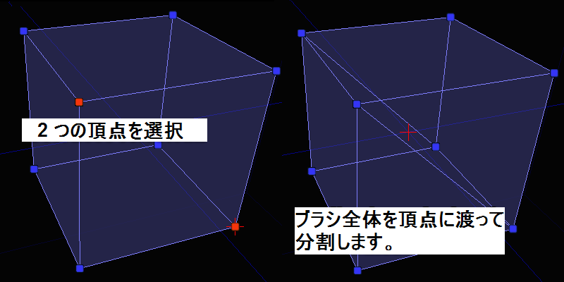
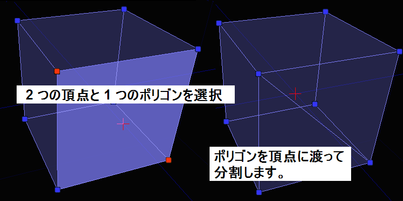
選択された組み合わせが有効なものでない場合、”Split (分割)” ボタンは無効化されるので、分からなくなったら上記の写真を参考に有効な組み合わせを見つけてください。Triangulate (三角測量)
このモディファイヤは、オブジェクトを三角測量するのに使用されます。つまり、選択されたポリゴンは三角形に分解されます。これは、ブラシに対してより細かいコントロールを必要とする場合に便利です。 ブラシ全体を三角形に分解したい場合は、事前にポリゴンを選択しないでください。ポリゴンがまったく選択されていないと言うことは、「ブラシ全体を三角形に分解する」ということです。例
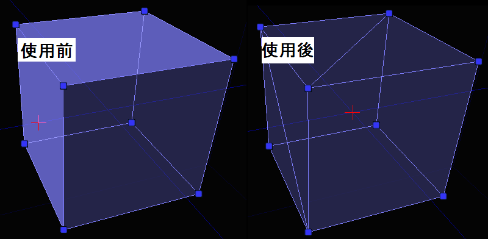
Optimize (最適化)
このモディファイヤは、選択したポリゴンをチェックし (ポリゴンが選択されていない場合は、ブラシ全体)、凸面形ポリゴンに形作ることができるポリゴンをマージします。これは、以前に分割や三角形への分解をたくさん行っていたブラシから、余分なポリゴンを削除するのに便利です。 また、頂点を変な風に動かしてしまい、エディタが自動的に周りのポリゴンを分解してしまった場合などの修正にも便利です。すべてが元に戻ったら、このボタンを押してブラシをクリーンアップします。例
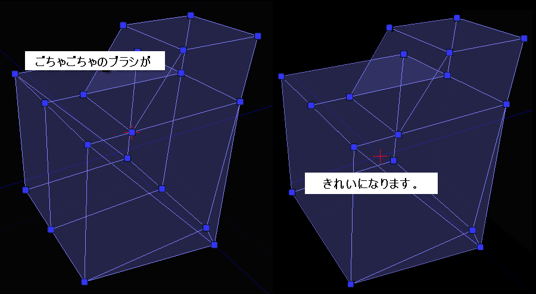
Turn (回転)
このモディファイヤはエッジを回転するのに使用されます。このモディファイヤには、選択されたエッジの横のどちらかのポリゴンは三角形でなければならないという制限があります。というのは、それがエッジを回転させるのに論理的な意味がある唯一の方法だからです。複数のエッジを一度に回転することができますが、これはややこしいことに結果することがあるので、気をつけてください。例
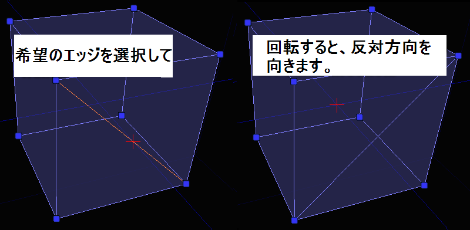
Weld (結合)
このモディファイヤは頂点を結合するのに使用されます。頂点をお互いの上にドラッグすることでも同様の効果が得られますが、この方法ですと手動ですべて並べることを心配せずに、素早く結合することができます。例
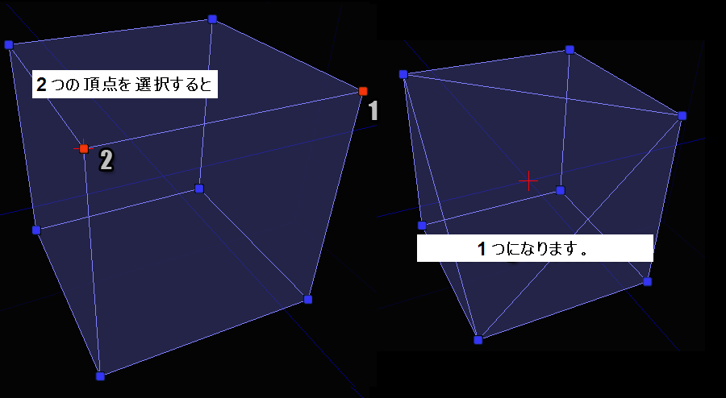
この例で、選択の順序は重要であることに注意してください。頂点 2 は、頂点 1 の位置に結合されます。